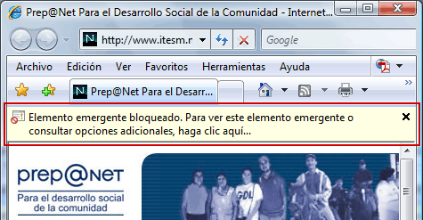
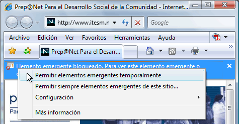

Tema 2. Comenzando a navegar por internet
¿Qué es una página electrónica?
¿Qué es una página electrónica?
Una página electrónica o de Web es un conjunto de información que forma un documento que se adapta para ser visto en la web bajo un lenguaje llamado HTML (HyperText Markup Language) al conjunto de varias páginas en un servidor se le llama Sitio Web.
Recuerde: El lenguaje de programación que se usa para describir el contenido y formato de las páginas de Web se llama: HTML (HyperText Markup Language)
Características de una página electrónica
Usted está estudiando este curso a través de una página Web, deténgase un momento, observe esta página y piense: ¿Qué características puede distinguir en esta página o de las anteriores que ya consultó?
Seguramente pensó algo parecido a esto:
- El tamaño, color y tipo de letra, diseño
- Las figuras e iconos animados
- Las ligas o vínculos hacia otros documentos
- El sonido y diseño del fondo de la página
¿Cuál es la característica más importante de una página Web?
La característica más importante de una página Web es la de las ligas, ya que son representadas por palabras o frases que "ligan" o "enlazan" a otro documento o pagina web.
¡Importante!
Una característica adicional es que si se mueve el puntero del ratón sobre esas ligas el puntero cambia a una mano, indicando el enlace disponible a acceder con sólo hacer clic.
Esta característica proporciona la facilidad de "brincar" de una parte a otra en una misma página, o bien a una página distinta en búsqueda de la información que es de interés sin ninguna restricción.
Cómo localizar una página electrónica
Imagine que su mejor amigo lo invita a una fiesta ¿qué es lo primero que usted le preguntaría? Seguramente le diría: ¿Dónde será la fiesta? "Pásame la dirección". Y esa dirección está compuesta por el nombre de una calle, el número, la colonia, la localidad o el municipio. ¿No es así?
Así como nosotros pedimos la dirección para llegar a un lugar que es de nuestro interés lo mismo ocurre con las Páginas Web, para localizarlas utilizamos una dirección o un URL (Universal Resource Locator) que en español sería un "Localizador Universal de Recursos de Internet", que da una sintaxis (formato) estándar para mostrar los distintos recursos de Internet.
http:// |
Dirección de Página Web
Un URL de acceso a recursos Web se denota por el prefijo http:// seguido de la dirección de Internet completa del sitio al que se desea acceder. |
Conocer y abrir el navegador de Internet
¿Qué se necesita para entrar a Internet?
Para poder tener acceso a ese sistema, se requiere un programa que permite navegar en la Web.
Actualmente los navegadores más utilizados son:

¿Cómo empezar a trabajar con un Navegador?
Para empezar a explorar las características que ofrece el navegador y así poder ver la información de las páginas de Web en la red. Se tienen las siguientes opciones:
| Desde el acceso directo |
|
| Desde el menú de inicio |
|
¿Cómo agregar una página de Internet en el botón de Favoritos?
A todos nos gusta guardar cosas que nos agradan, que son especiales, útiles o interesantes para nosotros. Al estar navegando en Internet usted va a encontrar páginas que son interesantes, útiles o bien que usted necesite recordar su dirección. La ventana de un navegador tiene un botón llamado Favoritos ¿lo recuerda? El cual permite guardar ese tipo de direcciones.
Veamos los siguientes procedimientos para guardar y entrar páginas Web que le gustaría consultar seguido.
| Para agregar a favoritos (favorites/bookmarks) |
|
| Para entrar a favoritos |
|

¿Qué son las ventanas emergentes?
Cuando nos encontramos navegando en la Web, hay páginas electrónicas de todo tipo que cuando se abren, nos muestra una nueva ventana con otra página electrónica en menor tamaño. Normalmente esto se hace cuando se requiere poner un aviso importante, una encuesta o bien información que es importante mostrar a primera vista.
Por ejemplo, cuando ingresa a un curso del portal de Centros Comunitarios de Aprendizaje, se abre una ventana emergente que contiene la encuesta de evaluación de los cursos:
¿Qué es un bloqueador de ventanas emergentes?
Muchos navegadores han incluido hoy en día una herramienta llamada bloqueadores de ventanas emergentes, ya que muchas páginas contienen demasiadas y se puede perder la organización de las ventanas.
Cuando se produce uno de estos bloqueos, el navegador muestra este aviso para hacerle saber que está bloqueando una ventana emergente:

¿Cómo desactivar el bloqueador de ventanas emergentes?
Si se tiene activado el bloqueador es posible que se esté presentando el aviso del bloqueo del Pop-Up, si se requiere abrir la ventana emergente (Pop up) existe un modo rápido para saltar el bloqueo.
- Haga clic con el botón derecho del ratón sobre la advertencia.
-
Seleccione la opción "Permitir elementos emergentes temporalmente", y abrir la nueva ventana sólo una vez, o "Permitir siempre elementos emergentes de este sitio", y permitir siempre el uso de ventanas emergentes al sitio que está visitando.
